I am a scientist inspired by the diversity of microbial life. My research covers a range of topics including microbial physiology, ecology, evolution, symbiosis, and biogeochemistry. Focuses include: archaea involved in the global methane cycle, phototrophic sulfur oxidizers with unusual communal behaviors, bacteria that grow on electrodes, hyperthermophiles thriving near the boiling point of water, and extreme alkaliphiles adapted to life at pH 12. Many of these organisms are not available in pure culture, so my work has involved field campaigns to the deep ocean and terrestrial springs with unusual geochemistries; along with the application of a range of techniques developed for uncultured organisms. I combine these environmental microbiology approaches with mathematical modeling and traditional biochemical and genetic techniques to learn new and interesting biology. Examples of questions that have driven my research are:
- What evolutionary steps led to the transition between methane-producing and methane-oxidizing physiologies in the Archaea?
- How do different types of syntrophic interaction determine the physical organization of cell types in symbiotic associations?
- What role does nitrogen fixation play in marine methane seep ecosystems?
- How does extracellular electron transport work and what are the spatial limitations of this process?
- How can sufficiently large and fast bacteria escape low-Reynolds number, diffusion-dominated regimes?
Below I have highlighted how some of my work has contributed to answering these questions, summarizing the main takeaways from studies that are thematically related that I have led or contributed to as a co-author.
The Recent Projects section is mostly completed work from my PhD in the lab of Victoria Orphan at Caltech and the Current Projects section describes ongoing postdoctoral work in the lab of Dipti Nayak at UC Berkeley. My prior work focused more heavily on environmental microbiology questions and techniques, while the goal of my current work is to gain experience with genetic manipulation and protein biochemistry on organisms in pure culture. In the future, I hope to carry out research that requires both approaches at the interface between fundamental discovery and rigorous experimentation.
I have had the great pleasure of collaborating with a broad group of fantastic people on these projects. The best experiences I have had in science are when a unique technique or expertise I can bring to a colleague's project helps improve their story; while many of the successes of projects I have led are due to finding a collaborator with the right expertise that I lack. These interactions have left me with a broader appreciation for and understanding of biology. My ideal future research program will involve working with a wide variety of collaborations across many different disciplines.
Curriculum Vitae
Google Scholar
Current Projects
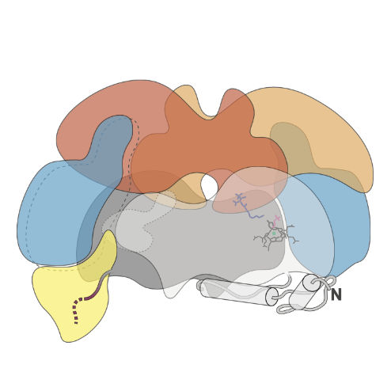
Understanding the assembly of the methane generating enzyme in Methanosarcina acetivorans
Nearly all biologically produced methane comes from Archaea known as methanogens. Whether it is emitted from a cow, natural wetlands, rice paddies or bioreactors, methane in these ecosystems is produced almost entirely from methanogenic Archaea living in oxygen-free niches. The enzyme responsible for methane production is methyl-coenzyme M reductase (Mcr), which contains 6 protein subunits, unique cofactors and a raft of post-translational modifications. In this project I am using Cas9-based genome editing, physiology and structural biology to understand what intermediate states exist in Mcr assembly. Genetic modification of the Mcr operon in the native host has allowed for the purification of Mcr assembly intermediates in large enough quantities for our collaborator Aaron Joiner to generate high resolution models from single-particle cryoEM. Our ongoing work on this project focuses on refining these models and attempting to generate a mechanistic understanding of the Mcr-associated proteins that help with the assembly process.
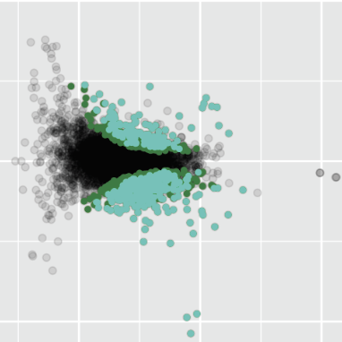
Physiological and transcriptional response to methane inhibition in a methanogenic archaea
The methane generating enzyme (Mcr) is required for the viability of methanogenic Archaea because all methanogens must make methane to survive. Mcr is also found in the methanotrophic archaea I studied in my PhD, where it is used in the reverse direction to consume methane. In both cases Mcr is one of the most abundant proteins in the cell, and the mRNA encoding it is one of the most prevalent in the transcriptome. This has led to the common assumption that Mcr is rate-limiting in both metabolisms. In this project I have placed the Mcr operon under the control of an inducible promoter allowing for tight control the amount of Mcr that is expressed. We are interested in understanding the aberrant (linear) growth phenotypes we observe when Mcr transcription is inhibited as well as understanding the global transcriptional response to Mcr limitation in Methanosarcina acetivorans. We hope to test whether Mcr abundance is actually limiting methanogenesis under ideal lab conditions, and see whether our induced limitation reveals unknown backup metabolic processes.
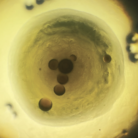
Developing the Archaeoglobi into a model system for the study of methane metabolism in Archaea
The past few years have seen tectonic shifts in our understanding of how broadly distributed methane metabolism is in the Archaea. In a 2015 study we found the first metagenomic evidence for the methane generating enzyme (Mcr) outside of the Euryarchaeota—the clade of Archaea previously thought to contain all methane metabolizing archaea (4). Subsequent studies by many groups have validated and extended these observations to an ever-increasing number of uncultivated Archaea. A study I helped with in 2019 found Mcr homologs in an uncultivated member of the hyperthermophilic archaeal class Archaeoglobi (12). A handful of the Archaeoglobi have been isolated in pure culture, including the sulfate reducing Archaeoglobus sp. and the metal and nitrate reducing Ferroglobus and Geoglobus; all of which can use a broad range of complex carbon compounds. My hope for this project is to develop the Archaeoglobi into genetically tractable model organisms to study how methanogenesis and methane oxidation can be gained and lost in Archaea. An added benefit of studying these organisms is that one species contains and extended complex I operon, which is the focus of one of my past research projects.
Recent Projects
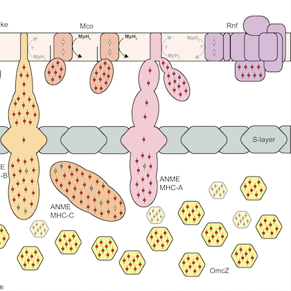
Evolutionary and Phylogenetic Analysis of Anaerobic Methanotrophic Archaea
This project led by myself and co-first author Connor Skennerton was a multi-institute collaborative analysis of all currently available metagenome-assembled genomes (MAGs) of Anaerobic Methanotrophic Archaea (ANME) (27). This work represents the state-of-the-art in our understanding of how the symbiosis between ANME and their bacterial partners functions to remove this potent greenhouse gas from marine methane seeps. The "parts list" of ANME-specific proteins we highlight here are thought to be crucial for the adaptation of a methanogenic ancestor to a methanotrophic lifestyle. The most exciting of these parts was the acquisition of extracellular electron transport machinery, which allows the ANME to share electrons directly with their syntrophic partner without a diffusible intermediate.
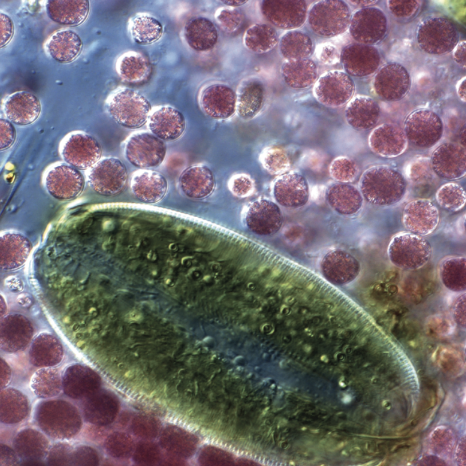
Characterization of an ultrafast swimming phototrophic bacteria
While working as a teaching assistant at the Woods Hole Microbial Diversity course I enriched a new genus of purple sulfur bacteria based on their communal swimming and biofilm forming behavior (21). Nearly all bacteria are small enough and slow enough to live in what is called a low-Reynolds number regime, where substrate supply is determined entirely by diffusive and not advective transport. High speed video microscopy and single particle tracking revealed this new bacteria to be the fastest swimming phototrophic bacteria, with top speeds of just over 800 microns per second. This size and speed puts them in an intermediate regime where our modelling suggests the fluid flow they produce can actually increase their substrate supply beyond what diffusion alone can generate.
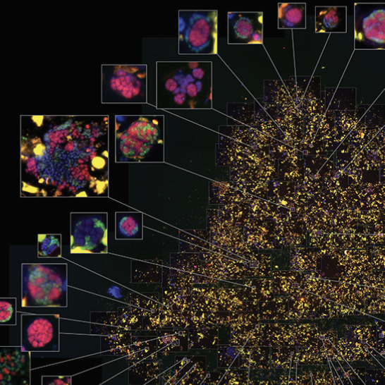
Mapping the activity of individual cells in symbiotic methane oxidizing consortia
The anaerobic oxidation of methane is a hugely important process in many marine and terrestrial environments that prevents methane, a strong greenhouse gas, from escaping into the atmosphere. The microorganisms responsible for this are archaea known as ANME that live in symbiotic consortia with sulfate reducing bacteria (SRB). In this project led by myself and co-first author Shawn McGlynn we combined stable isotope incubation experiments coupled to fluorescent in situ hybridization (FISH) and nanometer-scale secondary ion mass spectrometry (nanoSIMS) to map the activity of individual cells in relation to other cells in their structured community (5). These spatially-indexed activity measurements, combined with genomic analysis and modelling, indicate that the ANME-SRB syntrophy is based on the direct transfer of electrons between the symbiotic partners.
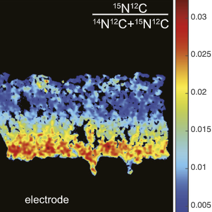
Mapping the activity of electroactive microbes at sub-micron resolution
Electroactive microorganisms such as Geobacter sulfurreducens are able to grow using anodes as their terminal electron acceptor. These features have resulted in great interest in using these organisms in bioelectrochemical reactors, where organic matter degradation is linked directly to electricity generation. The current density generated in these systems is an important value that determines the applicability of these technologies, so understanding how cell growth is limited in these communities is of great importance. In this work led by myself and co-first author Fernanda Jiménez Otero we used stable isotope pulses and nanoSIMS imaging to map the activity of G. sulfurreducens at sub-micron resolution within anodic biofilms. We showed that growth largely decreases with distance from the anode surface, suggesting that biofilm conductivity, not carbon substrate supply, was limiting in our reactors (15). We further showed how changes in the applied potential on the anode can effect the pattern of cell activity in the biofilms.
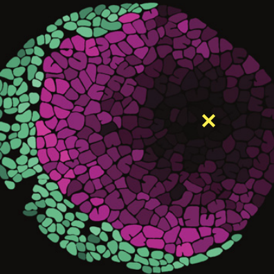
NanoSIMS and modeling shed light on extracellular electron transfer mechanisms
In a series of three papers led by Xiaojia He during his time at the University of Georgia we combined our FISH-nanoSIMS approach to visualize the metabolic activity of single cells in complex microbial communities with Xiaojia's metabolic modeling approaches. Through this series of papers we were able to iterate between experimentation and modeling to produce a detailed understanding of the interplay between physical community structure and overall function of the community. These papers have greatly advanced our understanding of what is possible in the ANME-SRB symbiosis, as well as helped shed light on what limits the current densities that can be achieved by Geobacter biofilms grown on electrodes (18, 13, 17). Further application of the isotope probing and imagine techniques, in conjunction with genetic manipulation and bioelectrochemical analysis, helped explain increased current density in Geobacter mutants led by Fernanda Jiménez Otero (20).
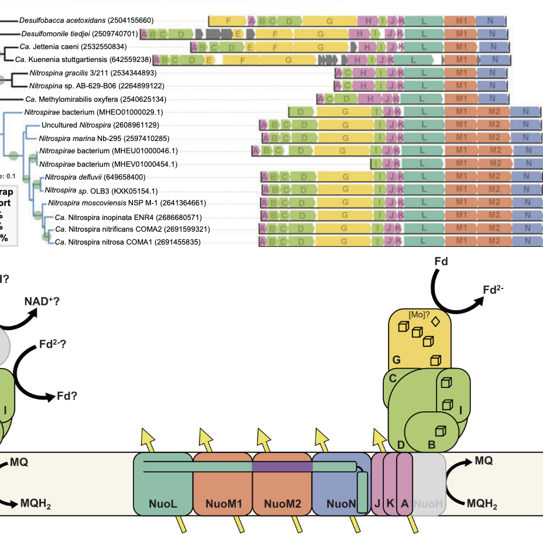
Evolutionary convergence on structural modifications to respiratory Complex I for increased proton pumping
In a comprehensive phylogenomic analysis of respiratory Complex I operons across all prokaryotic genomes I found a repeated pattern of incorporation of an additional proton pumping subunit. Leveraging recent crystal structures of Complex I the acquisition of these pumping subunits co-occurs with amino acid insertions necessary for changing the quaternary structure to incorporate the extra subunit. Remarkably, this genetic and structural reorganization evolved independently in three unrelated phylogenetic groups. These observations help explain a longstanding mystery about carbon fixation in ammonium-oxidizing Nitrospira (10). In a comparative genomic study led by Hank Yu on the newly-discovered chemolithoautotrophic manganese oxidizing bacteria we found that these organisms have iterated on this evolutionary process, bringing in yet another pumping subunit, indicating the ease with which this design principle can be repeatedly utilized for augmenting microbial energy metabolism (24).
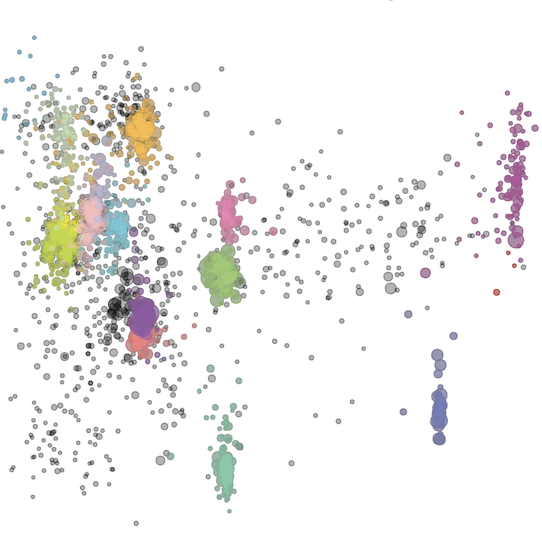
Investigations into hyperalkaliphilic life in serpentinizing systems
Serpentinization is a geologic process that can produce marine hydrothermal vents or terrestrial springs that are characterized by very low redox potential and very high pH. The chemical gradients that occur when these fluids mix with more oxidizing waters of the ocean or the oxygenated atmosphere make for a great habitat for extremophilic microorganisms. In a project led by Leah Trutschel in Annie Rowe's lab, I helped with a series of field campaigns to characterize the chemistry and microbiology of Ney Springs, a serpentinizing spring from Northern California with the most extreme eH/pH of any natural waters on Earth (26). Ongoing work on this system is attempting cultivation of some of the dominant organisms in the pH 12 waters, as well as continued monitoring of the microbial community dynamics over time.
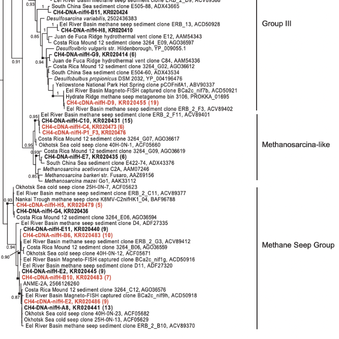
Understanding the breadth and significance of nitrogen fixation in marine methane seep ecosystems
During my time in the Orphan lab I worked on three studies all led by Anne Dekas that helped us better understand the role of nitrogen fixation in marine sediments. In this work I helped set up stable isotope probing incubations with 15N-labeled nitrogen gas so that we could trace bulk nitrogen fixation rates with Elemental Analyzer Isotope Ratio Mass Spectrometry, as well as trace nitrogen fixation into individual organisms using our combined FISH-nanoSIMS approach. I also extracted DNA and RNA from our sediment incubations to help understand which organisms in the community contained the genetic potential for nitrogen fixation and who were actively transcribing nitrogenase genes. Most of our work focused on methane seep ecosystems(2,6), but we also compared the nitrogen fixation rates and active organisms between these ecosystems and other marine sediments such as background non-seep sediments and the communities surrounding whalefalls(9).
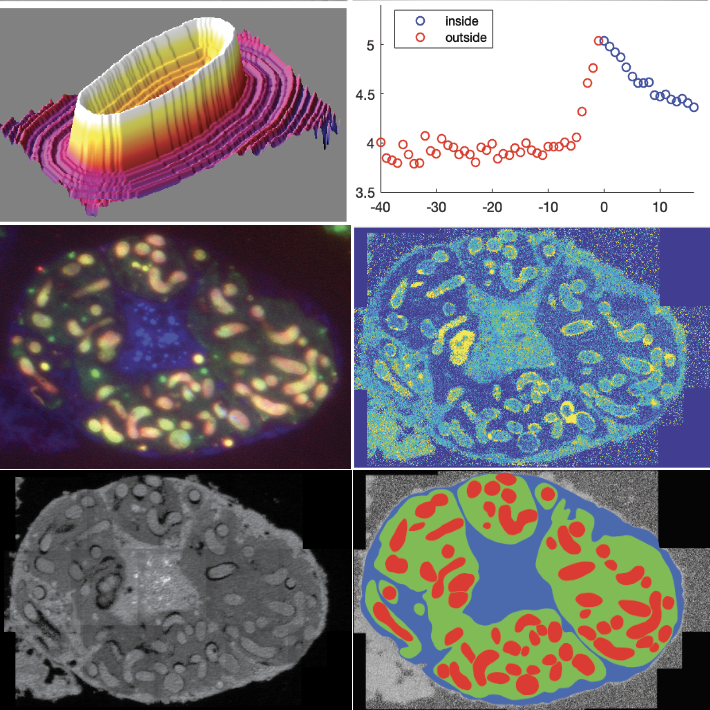
NanoSIMS investigations of other structured microbial communities
I was lucky enough to be a collaborator on a number of other projects where we could use our FISH-nanoSIMS approach to help other groups answer interesting questions of their structure microbial communities. In a project led by DeAnna Bublitz I helped design experiments and develop a sample preparation strategy to trace isotopically labelled D-alanine into the peptidoglycan layer of Moranella sp. which live inside Tremblaya sp., which in turn live inside of special bacteriocyte cells in Mealybugs (14). This application of phylogenetic imaging and isotope imaging helped us make the case that peptidoglycan production of the innermost bacterial symbiont was dependent on biosynthetic processes that have been exported to the insect genome. In another study led by Julia Schwartzman we used stable isotope probing to understand the nutrient consumption dynamics of vibrio cultures that form bizarre spherical biofilms, where phenotypic differentiation occurs, resulting in an outer layer of immobile cells forming a shell around a rapidly swimming motile inner core (25).
Mentorship and Outreach
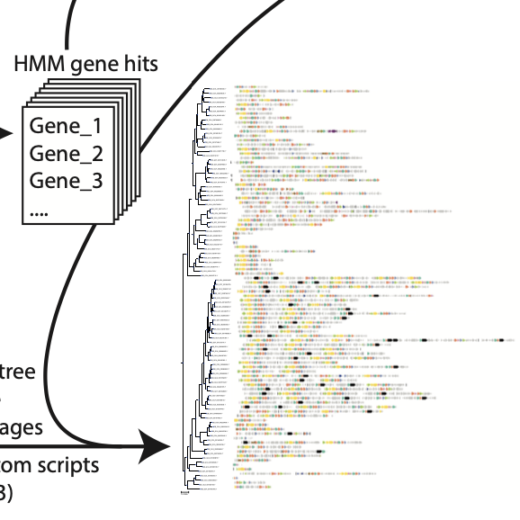
Remote metorship during COVID-19
During the COVID-19 pandemic many summer research programs were forced to be remote, which is particularly hard in the biological sciences where many of the students hope to get laboratory experience. During the summer of 2020 I volunteered as a mentor for the Research Science Institute (RSI) at MIT, a program I participated in as a student in 2006. During that project my summer student and I expanded on the complex I analysis I did in my PhD (10), generating a series of python programs to screen the entire GTDB prokaryote genome database for complex I operons and layer these gene clusters on phylogentic trees to easily visualize gene synteny changes through evolutionary time. In the summer of 2021 I mentored two additional RSI students and two students from NIH's Bridges to Baccalaureate (B2B) Research Training Program run by the Molecular and Cell Biology department at UC Berkeley. Projects included evolution of flu virus spike proteins and the incorporation of the non-standard amino acid pyrrolysine into proteins in methanogenic archaea.
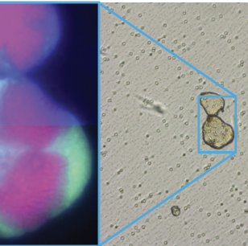
In-person mentorship
In 2018 I served as a summer research mentor for the Amgen Scholars Program. My mentee and I developed protocols for coupling fluorescence in situ hybridization with laser capture microdissection of individual ANME-SRB aggregates from methane seep sediments. Individual captured aggregates were subjected to DNA extraction and PCR for marker genes to link the spatial organization of the community with strain-level information on the partner organisms.
Summer 2022 I am following up with one of my remote B2B students from last summer who wanted to come back and get some laboratory experience. Together we are working on making some of the genome editing contructs and testing transformation protocols in my Archaeoglobus genetics project.
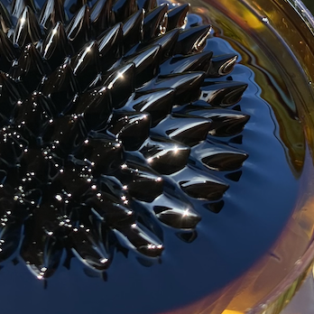
Science outreach at El Cerrito High School
Starting in 2020 the Miller Insitute at UC Berkeley began working with science teachers at El Cerrito High School to develop outreach aimed at inspiring and educating students about careers in science. I participated virtually during pandemic school closures, and then took over organizing these outreach efforts in early 2021, transitioning them to in-person format. In these classroom visits I share some of my favorite science demos and answer questions about scientific careers. For biology I have brought microscopes and a variety of everyday examples of symbiosis and parasatism in lichens and dodder. For the physics classes I bring a cloud chamber for visualizing cosmic rays and ferrofluid for to visualize magnetic field lines.
Awards
• 2020 – 2023 Miller Research Fellowship
• 2017 – 2019 NIH Predoctoral Training Grant in Molecular and Cell Biology
• 2016 Gordon P. and Virginia G. Eaton Graduate Fellowship
• 2015 Caltech CEMI Fellowship
• 2013 Rose Hills Fellowship
• 2010 NCAA Men’s Soccer Captain, First-Team All-Conference, Brine Award of Distinction
• 2009, 2010 Caltech Upperclass Merit Scholarship
• 2009 NCAA Men’s Soccer Captain, Second-Team All-Conference, Brine Award of Distinction
• 2009 Amgen Scholars Program
• 2009 George W. and Bernice E. Green Memorial Prize
• 2008, 2010 Caltech Summer Undergraduate Research Fellowship
• 2008 Richard G. Brewer Prize in Physics
Metrics
As of July 2022
• Publications 26
• Citations 1933
• h-index 14
• i10-index 15
Teaching and Service
• 2022 Co-chair Gordon Research Seminar Microbial One-Carbon Conversion from the Microscale to the Global Scale
• 2010 – 2019 Teaching assistant for Caltech courses: Microbial Ecology, Evolution, Microbial Metabolic Diversity, Bioengineering Bootcamp, The Great Ideas of Biology, Principles of Biology
• 2017 - 2019, 2022 Teaching assistant for International Geobiology Course, Caltech
• 2016 Teaching assistant for Microbial Diversity Course, Marine Biological Laboratory at Woods Hole
• 2016, 2019 Organizer Southern California Geobiology Symposium
• 2017 – 2018 Organizer Caltech Geoclub Seminar Series
• Reviewer for: Nature Microbiology, Science, Frontiers in Microbiology, Environmental Microbiology, Communications Biology, mSystems, Limnology and Oceanography: Methods, Elementa, Biogeosciences, NASA Astrobiology External Reviewer
Publications
27: Chadwick, G. L.*, Skennerton, C. T.*, Laso-Pérez, R., Leu, A. O., Speth, D. R., Yu, H., ... & Orphan, V. J. (2022). Comparative genomics reveals electron transfer and syntrophic mechanisms differentiating methanotrophic and methanogenic archaea. PLoS biology, 20(1), e3001508. *Authors contributed equally to this work.
26: Trutschel, L. R., Chadwick, G. L., Kruger, B., Blank, J. G., Brazelton, W. J., Dart, E. R., & Rowe, A. R. (2022). Investigation of microbial metabolisms in an extremely high pH marine-like terrestrial serpentinizing system: Ney Springs. Science of The Total Environment, 836, 155492.
25: Schwartzman, J. A., Ebrahimi, A., Chadwick, G. L., Sato, Y., Roller, B. R., Orphan, V. J., & Cordero, O. X. (2022). Bacterial growth in multicellular aggregates leads to the emergence of complex life cycles. Current Biology.
24: Yu, H., Chadwick, G. L., Lingappa, U. F., & Leadbetter, J. R. (2022). Comparative Genomics on Cultivated and Uncultivated Freshwater and Marine “Candidatus Manganitrophaceae” Species Implies Their Worldwide Reach in Manganese Chemolithoautotrophy. mBio, 13(2), e03421-21.
23: Yu, H., Skennerton, C. T., Chadwick, G. L., Leu, A. O., Aoki, M., Tyson, G. W., & Orphan, V. J. (2022). Sulfate differentially stimulates but is not respired by diverse anaerobic methanotrophic archaea. The ISME Journal, 16(1), 168-177.
22: Brazelton, W. J., McGonigle, J. M., Motamedi, S., Pendleton, H. L., Twing, K. I., Miller, B. C., Lowe, W. J., Hoffman, A. M., Prator, C. A., Chadwick, G. L. ... & Lang, S. Q., (2022). Metabolic strategies shared by basement residents of the Lost City hydrothermal field. bioRxiv. Note: in final revision at Applied and Environmental Microbiology.
21: Chadwick, G. L. (2021). How to Beat Diffusion: Explorations of Energetics and Spatial Relationships in Microbial Ecosystems (Doctoral dissertation, Caltech).
20: Jiménez Otero, F., Chadwick, G. L., ... & Bond, D. R. (2021). Evidence of a streamlined extracellular electron transfer pathway from biofilm structure, metabolic stratification, and long-range electron transfer parameters. Applied and Environmental Microbiology, 87(17), e00706-21.
19: Lingappa, U.F., Yeager, C.M., Sharma, A., Lanza, N.L., Morales, D.P., Xie, G., Atencio, A.D., Chadwick, G. L., ... & Fischer, W. W. (2021). An ecophysiological explanation for manganese enrichment in rock varnish. Proceedings of the National Academy of Sciences, 118(25), p.e2025188118.
18: He, X., Chadwick, G. L., Kempes, C. P., Orphan, V. J., & Meile, C. (2021). Controls on interspecies electron transport and size limitation of anaerobically methane-oxidizing microbial consortia. Mbio, 12(3), e03620-20.
17: He, X., Chadwick, G. L., Jiménez Otero, F., Orphan, V., & Meile, C. (2021). Spatially Resolved Electron Transport through Anode-Respiring Geobacter sulfurreducens Biofilms: Controls and Constraints. ChemElectroChem, 8(10), 1747-1758.
16: Mickol, R.L., Louyakis, A.S., Kee, H.L., Johnson, L.K., Dawson, S.C., Hargreaves, K.R., Chadwick, G. L., Newman, D.K., Leadbetter, J.R. and Brown, C.T., (2021). Draft Genome Sequence of the Free-Living, Iridescent Bacterium Tenacibaculum mesophilum Strain ECR. Microbiology resource announcements, 10(1), pp.e01302-20.
15: Chadwick, G. L.*, Otero, F. J.*, Gralnick, J. A., Bond, D. R., & Orphan, V. J. (2019). NanoSIMS imaging reveals metabolic stratification within current-producing biofilms. PNAS, 201912498. *Authors contributed equally to this work.
14: Bublitz, D. C., Chadwick, G. L., Magyar, J. S., Sandoz, K. M., Brooks, D., Mesnage, S., Ladinsky, M. S., Garber, A. I., Bjorkman, P. J., Orphan, V. J., McCutcheon, J. P. (2019). Peptidoglycan production by an insect-bacterial mosaic. Cell, 179:j.cell.2019.08.054.
13: He, X., Chadwick, G. L., Kempes, C., Shi, Y., McGlynn, S., Orphan, V., & Meile, C. (2019). Microbial interactions in the anaerobic oxidation of methane: model simulations constrained by process rates and activity patterns. Environmental microbiology, 21(2), 631-647.
12: Boyd, J.A., Jungbluth, S.P., Leu, A.O., Evans, P.N., Woodcroft, B.J., Chadwick, G. L., Orphan, V.J., Amend, J.P., Rappé, M.S. and Tyson, G.W. (2019). Divergent methyl-coenzyme M reductase genes in a deep-subseafloor Archaeoglobi. The ISME journal, 13(5), 1269.
11: Bird, L. R., Dawson, K. S., Chadwick, G. L., Fulton, J. M., Orphan, V. J., & Freeman, K. H. (2019). Carbon isotopic heterogeneity of coenzyme F430 and membrane lipids in methane-oxidizing archaea. Geobiology.
10: Chadwick, G. L., Hemp, J., Fischer, W. W., & Orphan, V. J. (2018). Convergent evolution of unusual complex I homologs with increased proton pumping capacity: energetic and ecological implications. The ISME journal, 12(11), 2668.
9: Dekas, A.E., Fike, D.A., Chadwick, G. L., Green-Saxena, A., Fortney, J., Connon, S.A., Dawson, K.S. and Orphan, V.J. (2018). Widespread nitrogen fixation in sediments from diverse deep-sea sites of elevated carbon loading. Environmental microbiology, 20(12), 4281-4296.
8: McGlynn, S.E., Chadwick, G. L., O'Neill, A., Mackey, M., Thor, A., Deerinck, T.J., Ellisman, M.H. and Orphan, V.J. (2018). Subgroup characteristics of marine methane-oxidizing ANME-2 archaea and their syntrophic partners as revealed by integrated multimodal analytical microscopy. Appl. Environ. Microbiol., 84(11), e00399-18.
7: Scheller, S., Yu, H., Chadwick, G. L., McGlynn, S. E., & Orphan, V. J. (2016). Artificial electron acceptors decouple archaeal methane oxidation from sulfate reduction. Science, 351(6274), 703-707.
6: Dekas, A. E., Connon, S. A., Chadwick, G. L., Trembath-Reichert, E., & Orphan, V. J. (2016). Activity and interactions of methane seep microorganisms assessed by parallel transcription and FISH-NanoSIMS analyses. The ISME journal, 10(3), 678-692.
5: McGlynn, S. E.*, Chadwick, G. L.*, Kempes, C. P., & Orphan, V. J. (2015). Single cell activity reveals direct electron transfer in methanotrophic consortia. Nature, 526(7574), 531-535. *Authors contributed equally to this work.
4: Evans, P. N., Parks, D. H., Chadwick, G. L., Robbins, S. J., Orphan, V. J., Golding, S. D., & Tyson, G. W. (2015). Methane metabolism in the archaeal phylum Bathyarchaeota revealed by genome-centric metagenomics. Science, 350(6259), 434-438.
3: Tavormina, P. L., Hatzenpichler, R., McGlynn, S., Chadwick, G. L., Dawson, K. S., Connon, S. A., & Orphan, V. J. (2015). Methyloprofundus sedimenti gen. nov., sp. nov., an obligate methanotroph from ocean sediment belonging to the ‘deep sea-1’ clade of marine methanotrophs. International journal of systematic and evolutionary microbiology, 65(1), 251-259.
2: Dekas, A. E., Chadwick, G. L., Bowles, M. W., Joye, S. B., & Orphan, V. J. (2014). Spatial distribution of nitrogen fixation in methane seep sediment and the role of the ANME archaea. Environmental microbiology, 16(10), 3012-3029.
1: Levin, L. A., Orphan, V. J., Rouse, G. W., Rathburn, A. E., Ussler III, W., Cook, G. S., ... & Strickrott, B. (2012). A hydrothermal seep on the Costa Rica margin: middle ground in a continuum of reducing ecosystems. Proceedings of the Royal Society B: Biological Sciences, 279(1738), 2580-2588.
Presentations
Chadwick, G. L. (2022). Using nanoSIMS to answer interesting spatial questions. (Talk) International Geobiology Course 2022. Mammoth Lakes, CA
Chadwick, G. L. (2021). Genomic determinants of reverse methanogenesis in archaea. (Talk) Integrative Genomics Institute Seminar Series. Virtual.
Chadwick, G. L. (2021). Physiological and transcriptional response to the repression of methanogenesis in a methanogen. (Talk) West Coast Bacterial Physiologists. Virtual.
Chadwick, G. L. (2020). Genomic determinants of reverse methanogenesis in archaea. (Talk) Molecular and Cell Biology Department - Genetics, Genomics & Development retreat. Virtual.
Chadwick, G. L. (2020). How to anaerobically oxidize hydrocarbons: lessons from hydrothermal (and cold) marine sediments. (Invited Talk) Thermal Biology Institute Seminar Series, MSU. Virtual.
Chadwick, G. L. (2020). Cell to Ecosystem: Understanding methane and associated nutrient cycling by sediment-hosted syntrophic consortia and their viral predators. (Invited Talk) DOE-BER 2020 Genomic Sciences Program Annual PI Meeting. Arlington, Virginia.
Chadwick, G. L. (2019). Ultrafast swimming in a novel genus of purple sulfur bacteria. (Talk) West Coast Bacterial Physiologists. Pacific Palisades, California
Chadwick, G. L. (2019). Methanotrophy: looking backward. (Invited Talk) COST Action CA17120 Chemobrionics 30/80 Meeting. Granada, Spain.
Chadwick, G. L., Jiménez-Otero, F., Deerinck, T., He, X., Skennerton, C. T., Meile, C., Ellisman, M., Bond, D. R., Orphan, V. J. (2018). Implications of spatial structure in methanotrophic ANME-SRB consortia. (Poster) Molecular Basis of Microbial One-Carbon Metabolism, Gordon Research Conference. Sunday River, Maine.
Chadwick, G. L., Hemp, J., Fischer, W. W., & Orphan, V. J. (2017). Predicting the function of novel of complex I homologs from poorly studied and uncultured organisms: hints from primary sequences, crystal structures and phylogenies. (Poster) NeLLi 2017: From New Lineages of Life To New Functions. Walnut Creek, California.
Chadwick, G. L., Jiménez-Otero, F., Gralnick, J. A., Bond, D. R., Orphan, V. J. (2017). Geobacter activity in electrode biofilms is spatially dependent. (Poster) ISMET6 International Society for Microbial Electrochemistry and Technology Meeting. Lisbon, Portugal.
Chadwick, G. L., Hemp, J., Fischer, W. W., & Orphan, V. J. (2017). Convergent evolution of respiratory complex I homologs with additional proton pumping capacity. (Seminar series talk) MicroMorning, Caltech.
Chadwick, G. L. and Orphan, V. J. (2015). Genomic insights into the biochemistry and bioenergetics of anaerobic methanotrophic archaea. (Poster) Archaea: Ecology, Metabolism & Molecular Biology, Gordon Research Conference. Sunday River, Maine.
Chadwick, G. L., Dekas, A. E., Connon, S. A., and Orphan, V. J. (2011). Investigations into ammonium dependent shut off of nitrogen fixation in methane seep sediments from Hydrate Ridge North. (Poster) Southern California Geobiology Symposium, USC.
{kind=link}
{kind=link}
{kind=link}
{kind=link}
{kind=link}
{kind=link}
{kind=link}
{kind=link}
{kind=link}
{kind=link}
{kind=link}
{kind=link}
{kind=link}
{kind=link}
{kind=link}